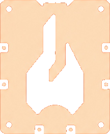

Fogl
esting
Online
Abrir Editor DXF
EN
Arrastrá tus archivos
.dxf
aquí
o
Seleccionar Archivos
Piezas Cargadas
Tamaño de Chapa (mm)
i
×
Separación (mm)
i
Iteraciones
i
Población
i
Tipo de optimización
i
Compact Area
Bounding Box
Rotaciones
i
Sin rotación
0° y 180°
4 (cada 90°)
8 (cada 45°)
Ayuda de configuración.
🧬 Iniciar Nesting
⏹ Detener
Evolucionando layouts...
Iteración 0 - Uso: 0%
🔬 Resultado de Optimización
Utilización
0%
Chapas
0
Piezas
0
Descargar DXF Optimizado